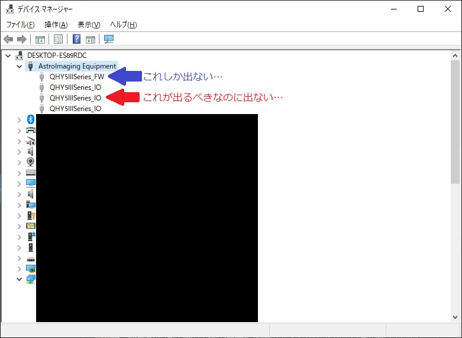
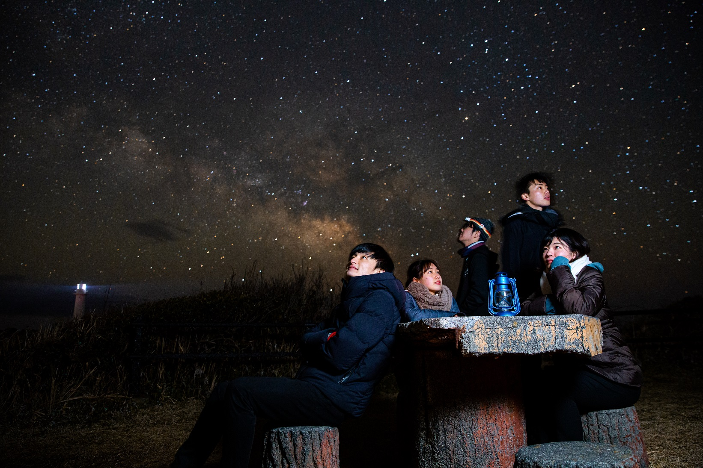
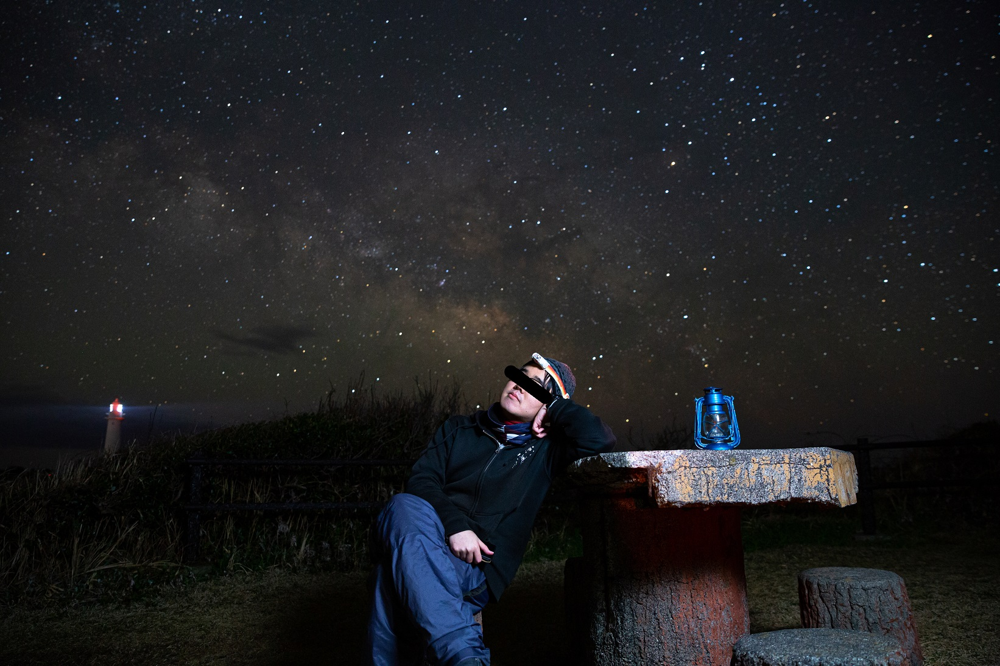
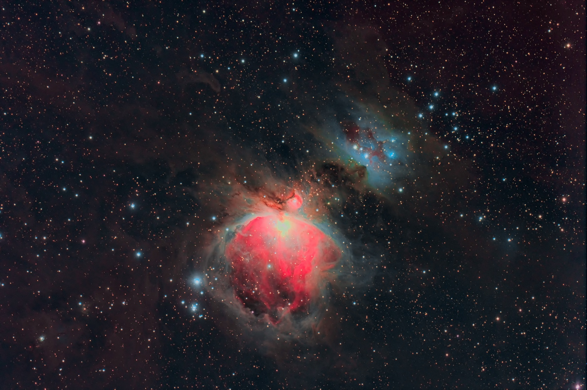
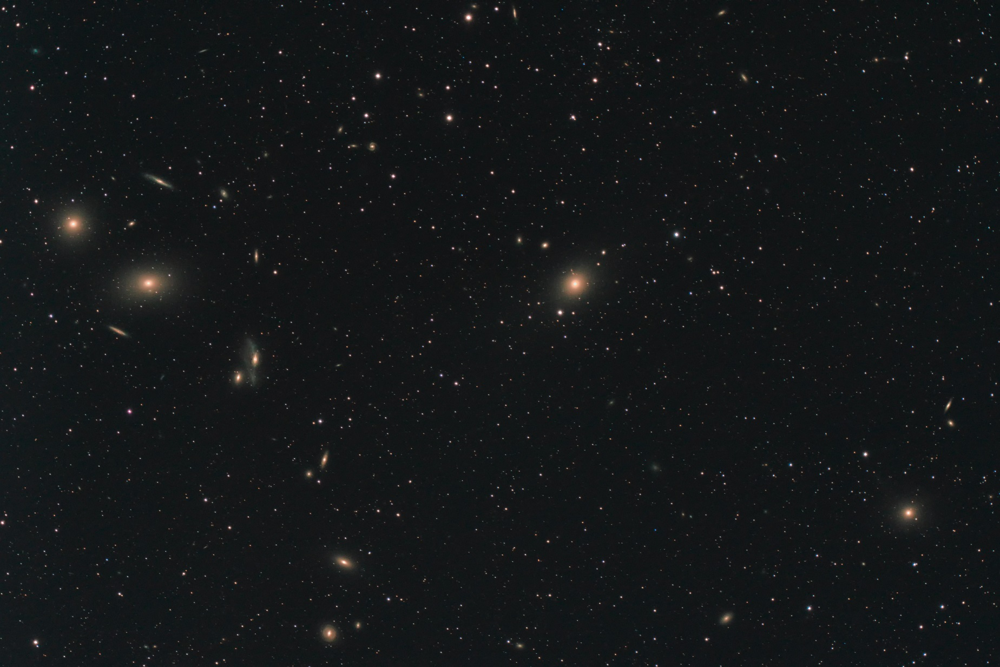
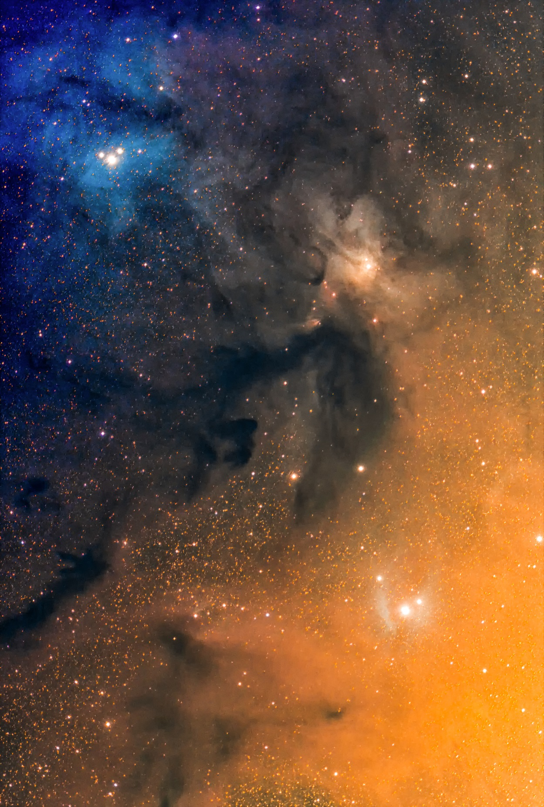

<!DOCTYPE html>
<html>

<head><meta name="generator" content="Hexo 3.8.0">
  <meta charset="utf-8">
  
  <title>QHY268C ファーストライト | ほしよみ大学生のブログ</title>
  <meta name="viewport" content="width=device-width">
  <meta name="description" content="あいさつ先日，届いた QHY268C のファーストをしてきました．このカメラですがかなりのじゃじゃ馬で，一度失敗をしたのですが，とりあえずなんとか使うことができましたという顛末になります．">
<meta name="keywords" content="天体写真,機材,カメラ,遠征記">
<meta property="og:type" content="article">
<meta property="og:title" content="QHY268C ファーストライト">
<meta property="og:url" content="http://dabokun.github.io/2021/03/28/00000050-qhy268c-first/index.html">
<meta property="og:site_name" content="ほしよみ大学生のブログ">
<meta property="og:description" content="あいさつ先日，届いた QHY268C のファーストをしてきました．このカメラですがかなりのじゃじゃ馬で，一度失敗をしたのですが，とりあえずなんとか使うことができましたという顛末になります．">
<meta property="og:locale" content="ja">
<meta property="og:image" content="http://dabokun.github.io/2021/03/28/00000050-qhy268c-first/card.jpg">
<meta property="og:updated_time" content="2021-03-28T16:19:59.433Z">
<meta name="twitter:card" content="summary_large_image">
<meta name="twitter:title" content="QHY268C ファーストライト">
<meta name="twitter:description" content="あいさつ先日，届いた QHY268C のファーストをしてきました．このカメラですがかなりのじゃじゃ馬で，一度失敗をしたのですが，とりあえずなんとか使うことができましたという顛末になります．">
<meta name="twitter:image" content="http://dabokun.github.io/2021/03/28/00000050-qhy268c-first/card.jpg">
<meta name="twitter:creator" content="@dabo_pic">
  
  <link rel="alternative" href="/atom.xml" title="ほしよみ大学生のブログ" type="application/atom+xml">
  
  
  <link rel="icon" href="/images/favicon.png">
  
  <link rel="stylesheet" href="/css/style.css">
  <!--[if lt IE 9]><script src="//html5shiv.googlecode.com/svn/trunk/html5.js"></script><![endif]-->
  
</head></html>
<body>
  <div id="container">
    <div class="mobile-nav-panel">
	<i class="icon-reorder icon-large"></i>
</div>
<header id="header">
	<h1 class="blog-title">
		<a href="/">ほしよみ大学生のブログ</a>
	</h1>
	<nav class="nav">
		<ul>
			<li><a href="/">Home</a></li><li><a href="/categories">Categories</a></li><li><a href="/tags">Tags</a></li><li><a href="/archives">Archives</a></li><li><a href="/about">About</a></li><li><a href="/work">Work</a></li>
			<li><a id="nav-search-btn" class="nav-icon" title="Search"></a></li>
			<li><a href="https://github.com/dabokun"></a>
			</li>
			<li><a href="https://twitter.com/dabo_pic"></a></li>
			<li><a href="/atom.xml" id="nav-rss-link" class="nav-icon" title="RSS Feed"></a>
			</li>
		</ul>
	</nav>
	<div id="search-form-wrap">
		<form action="//google.com/search" method="get" accept-charset="UTF-8" class="search-form"><input type="search" name="q" class="search-form-input" placeholder="Search"><button type="submit" class="search-form-submit">&#xF002;</button><input type="hidden" name="sitesearch" value="http://dabokun.github.io"></form>
	</div>
</header>
    <div id="main">
      <article id="post-00000050-qhy268c-first" class="post">
	<footer class="entry-meta-header">
		<span class="meta-elements date">
			<a href="/2021/03/28/00000050-qhy268c-first/" class="article-date">
  <time datetime="2021-03-28T09:25:07.000Z" itemprop="datePublished">2021-03-28</time>
</a>
		</span>
		<span class="meta-elements author">astr0dab0</span>
		<div class="commentscount">
			
			<a href="http://dabokun.github.io/2021/03/28/00000050-qhy268c-first/#disqus_thread" class="article-comment-link">Comments</a>
			
		</div>
	</footer>
	
	<header class="entry-header">
		
  
    <h1 class="article-title entry-title" itemprop="name">
      QHY268C ファーストライト
    </h1>
  

	</header>
	<div class="entry-content">
		
		
		<div id="toc" class="toc-article">
			<p class="toc-title">目次</p>
			<ol class="toc"><li class="toc-item toc-level-3"><a class="toc-link" href="#あいさつ"><span class="toc-number">1.</span> <span class="toc-text">あいさつ</span></a></li><li class="toc-item toc-level-3"><a class="toc-link" href="#清里で大失敗"><span class="toc-number">2.</span> <span class="toc-text">清里で大失敗</span></a></li><li class="toc-item toc-level-3"><a class="toc-link" href="#爪木崎からの朝霧"><span class="toc-number">3.</span> <span class="toc-text">爪木崎からの朝霧</span></a></li></ol>
		</div>
		
		<h3 id="あいさつ"><a href="#あいさつ" class="headerlink" title="あいさつ"></a>あいさつ</h3><p>先日，届いた QHY268C のファーストをしてきました．<br>このカメラですがかなりのじゃじゃ馬で，一度失敗をしたのですが，とりあえずなんとか使うことができましたという顛末になります．</p>
<a id="more"></a>
<h3 id="清里で大失敗"><a href="#清里で大失敗" class="headerlink" title="清里で大失敗"></a>清里で大失敗</h3><p>ファーストライトのつもりで，3月10日～11日で清里に行きました．目標はマルカリアンチェーンを撮ることでした．<br>ほうとうを食べてから20時頃に現地入り．</p>
<div class="twitter-wrapper"><blockquote class="twitter-tweet"><a href="https://twitter.com/dabo_pic/status/1369596905328496640" target="_blank" rel="noopener"></a></blockquote></div><script async defer src="//platform.twitter.com/widgets.js" charset="utf-8"></script>
<p>のんびりと組立ててから撮影を…と思ったのですが，まず<strong>ガイドに問題が発生</strong>．オートガイドには MGEN-3 を使っているのですが，キャリブレーションまでは通っているものの，実際にガイドを開始すると導入対象が吹き飛んでいくレベルで暴れまわります．<br>パラメタ値を変えたりして何度か試したもののうまくいかず，放棄．キャリブレーション時に（どちらかの軸か忘れましたが）ガイド信号を少し長めに送っていたことや，直交率を示す Ortho. の値が全然ダメ（20～40%くらい）なのが気になりました．今のところ鏡筒の前後バランスが出ていないので，これを改善してどうなるかといったところです．また，向いている方向の相性があったりするのかもしれません．オリオンの方向に向けるとうまくいきましたが，マルカリアンチェーンではうまくいきませんでした．全く困ったものですが，とりあえずバランスを出してみて直らなければ，別の策を練らねばなりません．<br>仕方がないのでカメラの接続を試みると今度は <strong>PC がカメラを全く認識しません．</strong>接続すると，本来は以下のように_IOの接尾辞がついたデバイス名が表示されるのですが，_FW（これはフィルタホイールのドライバか？）しか表示されません．それも「表示」から「非表示のデバイスの表示」を有効にして初めて表示されます．とにかく，デバイスが正しく認識されていないのは確かです．</p>
<p></p>
<p>これもQHY関係のドライバの再インストールや PC 再起動，全 USB 接続機器の取外しなど，考えられるありとあらゆることを数時間試してみたものの全くうまくいかず，寒さの中泣きたくなりながらバッテリとカメラとPCを車に撤退してふてくされていました．すると車内で突然 PC がカメラを認識しました．「まさか温度か…？（冷却カメラでそんな事があるのか？）」などと思いつつ時間はすでに2時頃．薄明までまだ2時間ほどありましたが，対象も子午線を越えようかという段階で気力もなく今回は諦めることにしました．一応 6D に変えていたのですが，疲れからか ISO-25600 のままで撮っていたことに気づき見なかったことにしました．<br>ちなみに現地では<a href="https://twitter.com/antales" target="_blank" rel="noopener">流れ星さん</a>と合流しており，上記問題について色々と相談したり話を聞いてもらいました．ありがとうございました．<br>また，カメラを認識しなくなる現象はこの後自宅でも発生し，もうこれは今のところ運なのではとしか考えられません（少なくとも温度ではなさそう）．出発前に Windows Update を走らせたことなど色々考えましたが，全ては憶測の域を出ず，はっきりとした原因はわかりませんでした．PC との相性とかもあるかもしれません．運でカメラが使えるか使えないかというのは大変困ったものです．<br>…とまあ散々な結果で，ボーズで帰ってからしばらくめちゃくちゃ落ち込んでいたのですが，いつまでもくよくよしてはいられず，その週の土日月に再チャレンジすることにしました．</p>
<h3 id="爪木崎からの朝霧"><a href="#爪木崎からの朝霧" class="headerlink" title="爪木崎からの朝霧"></a>爪木崎からの朝霧</h3><p>まず，設営の順番，ガイド，PC からのカメラ操作など不慣れなことが多すぎたので，手順という大枠だけは確定させておいたほうが楽だろうと考え，撮影の手順を徹底的に文書に書き出し，Google ドキュメントにまとめました．そして出発前にカメラとの接続を必ず確認するようにしました．<br>リベンジということでしたが，初日は知り合いのポートレートカメラマンと合流し，直焦はやりませんでした．暴風のユウスゲ公園でしばらく星を見ながら一時間ほど駄弁り，爪木崎に移動．爪木崎に行くのは初めてでしたが，灯台前は本当に人が多かったです．灯台から少し離れたところに良さげなベンチがあったので，そこで何枚かポトレを撮影しました．</p>
<p><br><br>（※二枚目の私は見苦しいので目線を入れています）</p>
<p>ストロボは一緒に行ってくれた方の提供です．みんな灯台の方に行くので手前の広場は人が少なく，穴場な感じでした．<br>やっぱり一人で伊豆半島南端まで行くのは遠いです．5時頃まで下田で仮眠をとり，伊東マリンタウンでいつものように温泉に入って朝ごはんを食べたのですが，その後疲れで11時くらいまで寝てしまいました．この時点で同行者の方々とは解散，再びソロに．</p>
<div class="twitter-wrapper"><blockquote class="twitter-tweet"><a href="https://twitter.com/dabo_pic/status/1370880381004644352" target="_blank" rel="noopener"></a></blockquote></div><script async defer src="//platform.twitter.com/widgets.js" charset="utf-8"></script>
<p>伊東マリンタウンは朝風呂料金がなくなり1000円になった代わりに，時間制限がなくなったようでした（以前は9時だか10時で朝風呂の人は帰ってくれとアナウンスが入っていた）．</p>
<div class="twitter-wrapper"><blockquote class="twitter-tweet"><a href="https://twitter.com/dabo_pic/status/1370950556169031682" target="_blank" rel="noopener"></a></blockquote></div><script async defer src="//platform.twitter.com/widgets.js" charset="utf-8"></script>
<p>というわけで目も覚めたので富士宮に移動してきました．昼間はご飯を食べるか観光するくらいしかやることがないので，まずはのんびり，「ゆるキャン」にも登場するお好み食堂伊東さんへ．一時間弱待ちでしぐれ焼きを食べました．焼きそばやお好み焼きというと個人的には味が濃いイメージがあったのですが，ここのはとてもさっぱりしていてとても好きな味で，気づいたら完食していました．</p>
<div class="twitter-wrapper"><blockquote class="twitter-tweet"><a href="https://twitter.com/dabo_pic/status/1370983756404719616" target="_blank" rel="noopener"></a></blockquote></div><script async defer src="//platform.twitter.com/widgets.js" charset="utf-8"></script>
<p>その後は本栖湖畔へ移動．おやつを食べながら少し夕日を眺め，コンビニで買い出しから朝霧アリーナに現地入りしました．</p>
<div class="twitter-wrapper"><blockquote class="twitter-tweet"><a href="https://twitter.com/dabo_pic/status/1371021600565301251" target="_blank" rel="noopener"></a></blockquote></div><script async defer src="//platform.twitter.com/widgets.js" charset="utf-8"></script>
<div class="twitter-wrapper"><blockquote class="twitter-tweet"><a href="https://twitter.com/dabo_pic/status/1371061962365415426" target="_blank" rel="noopener"></a></blockquote></div><script async defer src="//platform.twitter.com/widgets.js" charset="utf-8"></script>
<p>現地では問題なくカメラがつながり使用できたので，とりあえず問題はガイドだけになりました．結局，オリオン大星雲に向けたときはしっかりとガイドしたのですが，マルカリアンチェーンやカラフルタウン付近に向けたときは機能してくれませんでした．MGEN-3に関して有識者の方がいらっしゃいましたらなにかヒントを教えていただけると幸いです．<br>オリオン大星雲，マルカリアンチェーン，カラフルタウン付近をなんとか撮影できましたので，以下に載せておきます．一応成果が出て安心です．</p>
<p></p>
<div style="text-align: center;">
「オリオン大星雲」<br>
2021年3月14日 20時19分～ 静岡県 朝霧アリーナ駐車場にて<br>
FSQ-85EDP直焦点F5.3<br>
QHY268C<br>
Gain 0/Offset 15/-20℃/480s*16=128min<br>
タカハシ EM-11 Temma2 Jr.<br>
ステライメージ8 / Adobe Lightroom CC / Photoshop CC<br><br>
</div>

<p></p>
<div style="text-align: center;">
「マルカリアンチェーン」<br>
2021年3月15日 0時10分～ 静岡県 朝霧アリーナ駐車場にて<br>
FSQ-85EDP直焦点F5.3<br>
QHY268C<br>
Gain 15/Offset 15/-20℃/180s*30=90min<br>
タカハシ EM-11 Temma2 Jr.<br>
ステライメージ8 / Adobe Lightroom CC / Photoshop CC<br><br>
</div>

<p></p>
<div style="text-align: center;">
「カラフルタウン付近」<br>
2021年3月15日 2時53分～ 静岡県 朝霧アリーナ駐車場にて<br>
FSQ-85EDP直焦点F5.3<br>
QHY268C<br>
Gain 0/Offset 15/-20℃/300s*18=90min<br>
タカハシ EM-11 Temma2 Jr.<br>
ステライメージ8 / Adobe Lightroom CC / Photoshop CC<br><br>
</div>

<p>モードは全てフォトグラフィックモードです．<br>とりあえずなんか撮れれば良かったので南北とかは全く気にしてません．やはりGain0で大きなフルウェル，16bitの豊かな階調を活かせるというのはとても大きいです．<br>HDR などしなくても，オリオン大星雲の中心部が飽和しにくいです．アンドロメダとか撮ったらどうなるかも試してみたいです．<br>もう少し解像感とかノイズに気を配りたいなあという気持ち．がんばります．<br>カメラやガイドなど，慣れるまでもう少しかかりそうですね．近々鏡筒の前後バランスを出すKBプレートとファインダーを導入するので，少しはやりやすくなるのでないかと思っています．<br>また遠征に行ったらレポートしたいと思います．</p>
<div class="twitter-wrapper"><blockquote class="twitter-tweet"><a href="https://twitter.com/dabo_pic/status/1371269535001583621" target="_blank" rel="noopener"></a></blockquote></div><script async defer src="//platform.twitter.com/widgets.js" charset="utf-8"></script>
<p>そうそう，上述したポートレートとマルカリアンチェーン，昨年原村で撮影した昴の写真を使用して，<a href="https://fancollection-too-maaya.tumblr.com/post/646369092147806208/18%E3%81%8B%E3%81%99%E3%81%8B%E3%81%AA%E3%83%A1%E3%83%AD%E3%83%87%E3%82%A3-photography-%E3%81%A0%E3%81%BC-%E5%A4%9C%E6%98%8E%E3%81%91%E3%81%A8%E3%81%A8%E3%82%82%E3%81%AB%E5%BF%98%E3%82%8C%E3%81%9F%E3%81%8F%E3%81%AA%E3%81%84%E6%99%AF%E8%89%B2%E3%81%8C%E6%B6%88%E3%81%88%E3%82%8B" target="_blank" rel="noopener">坂本真綾25周年を祝うファン企画</a>に参加させていただきました．写真と，彼女の楽曲と絡めた簡単な解説を載せておりますので，よろしければご覧ください．</p>
<p>それではまた．</p>

		
	</div>
	<footer class="article-footer">
		<a href="https://twitter.com/intent/tweet?text=QHY268C%20%E3%83%95%E3%82%A1%E3%83%BC%E3%82%B9%E3%83%88%E3%83%A9%E3%82%A4%E3%83%88｜%E3%81%BB%E3%81%97%E3%82%88%E3%81%BF%E5%A4%A7%E5%AD%A6%E7%94%9F%E3%81%AE%E3%83%96%E3%83%AD%E3%82%B0&url=http://dabokun.github.io/2021/03/28/00000050-qhy268c-first/" class="twitter-share-button" target="_blank" title="Twitter"></a>
		<script async src="https://platform.twitter.com/widgets.js" charset="utf-8"></script>

		<div id="fb-root"></div>
		<script async defer crossorigin="anonymous" src="https://connect.facebook.net/ja_JP/sdk.js#xfbml=1&version=v4.0"></script>
		<div class="fb-share-button" data-href="http://dabokun.github.io/2021/03/28/00000050-qhy268c-first/" data-layout="button_count" data-size="small"><a target="_blank" href="https://www.facebook.com/sharer/sharer.php?u=https%3A%2F%2Fdabokun.github.io%2F&amp;src=sdkpreparse" class="fb-xfbml-parse-ignore">シェア</a></div>
	</footer>
	<footer class="entry-footer">
		<div class="entry-meta-footer">
			<span class="category">
				
  <div class="article-category">
    <a class="article-category-link" href="/categories/equipments/">機材</a>
  </div>

			</span>
			<span class=" tags">
				
  <ul class="article-tag-list"><li class="article-tag-list-item"><a class="article-tag-list-link" href="/tags/camera/">カメラ</a></li><li class="article-tag-list-item"><a class="article-tag-list-link" href="/tags/astrophotography/">天体写真</a></li><li class="article-tag-list-item"><a class="article-tag-list-link" href="/tags/equipments/">機材</a></li><li class="article-tag-list-item"><a class="article-tag-list-link" href="/tags/expedition/">遠征記</a></li></ul>

			</span>
		</div>
	</footer>
	
	
<nav id="article-nav">
  
    <a href="/2999/12/31/99999999-notice/" id="article-nav-newer" class="article-nav-link-wrap">
      <strong class="article-nav-caption">Newer</strong>
      <div class="article-nav-title">
        
          お知らせ
        
      </div>
    </a>
  
  
    <a href="/2021/03/25/00000049-super-wide-bino-live/" id="article-nav-older" class="article-nav-link-wrap">
      <strong class="article-nav-caption">Older</strong>
      <div class="article-nav-title">
        
          スーパーワイドビノと坂本真綾25周年ライブ
        
      </div>
    </a>
  
</nav>

	
</article>


<section id="comments">
	<div id="disqus_thread">
		<noscript>Please enable JavaScript to view the <a href="//disqus.com/?ref_noscript">comments powered by
				Disqus.</a></noscript>
	</div>
</section>

    </div>
    <div class="mb-search">
  <form action="//google.com/search" method="get" accept-charset="utf-8">
    <input type="search" name="q" results="0" placeholder="Search">
    <input type="hidden" name="q" value="site:dabokun.github.io">
  </form>
</div>
<footer id="footer">
	<h1 class="footer-blog-title">
		<a href="/">ほしよみ大学生のブログ</a>
	</h1>
	<span class="copyright">
		&copy; 2021 astr0dab0<br>
		Modify from <a href="http://sanographix.github.io/tumblr/apollo/" target="_blank">Apollo</a> theme, designed by <a href="http://www.sanographix.net/" target="_blank">SANOGRAPHIX.NET</a><br>
		Powered by <a href="http://hexo.io/" target="_blank">Hexo</a>
	</span>
</footer>
    
<script>
  var disqus_shortname = 'astr0dab0';
  
  var disqus_url = 'http://dabokun.github.io/2021/03/28/00000050-qhy268c-first/';
  
  (function(){
    var dsq = document.createElement('script');
    dsq.type = 'text/javascript';
    dsq.async = true;
    dsq.src = '//go.disqus.com/embed.js';
    (document.getElementsByTagName('head')[0] || document.getElementsByTagName('body')[0]).appendChild(dsq);
  })();
</script>


<script src="//ajax.googleapis.com/ajax/libs/jquery/2.0.3/jquery.min.js"></script>


<link rel="stylesheet" href="/fancybox/jquery.fancybox.css" media="screen" type="text/css">
<script src="/fancybox/jquery.fancybox.pack.js"></script>


<script src="/js/script.js"></script>
  </div>
</body>
</html>